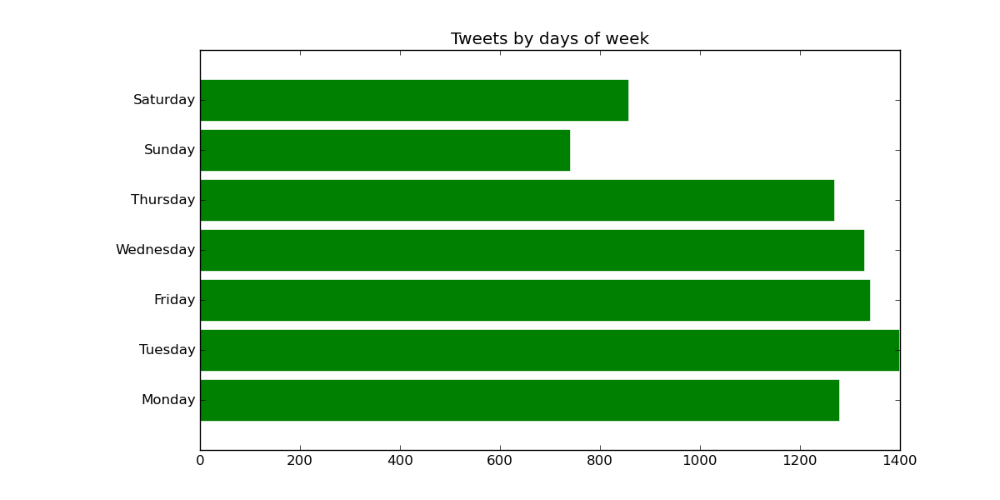

Twitter statistics
- You have been tweeting for 7 years and 181 day(s)
- Your first tweet was posted 2 years and 2 days after the first tweet posted ever to Twitter
- Total number of tweets in archive: 8199
- On an average, you have tweeted 3.00 tweets each day
- You have tweeted most often on a Tuesday
Tweets by days of week

10 most common hashtags

10 most common mention